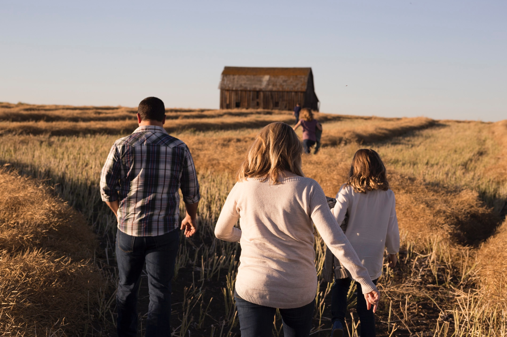
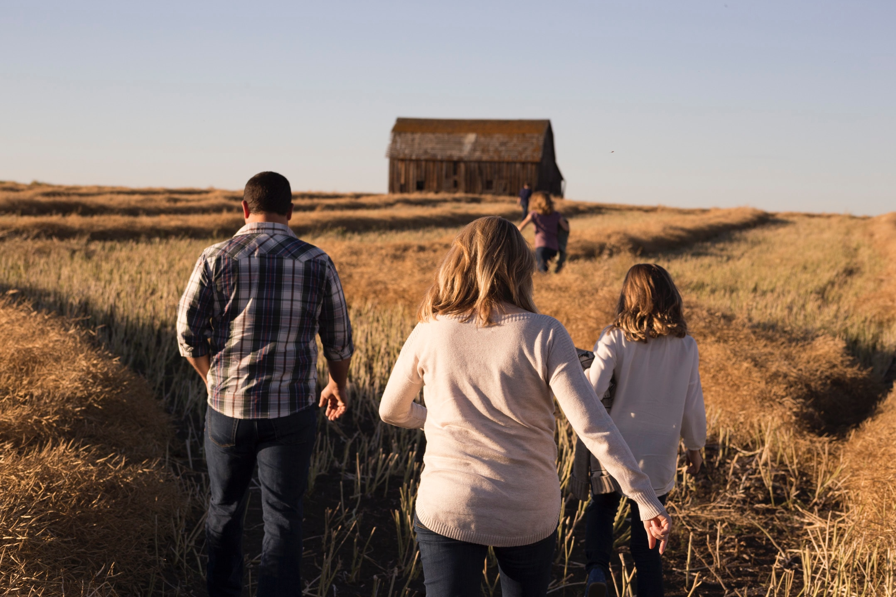

THE FUTURE OF BIODIVERSITY
Conserving Native Saskatchewan Prairie
_________________________________________________________
We are from the prairies: those glistening, sun-kissed fields of crops; thickening sunlight coating strands of spear grass; milkweed, sage, and marigolds laced in a cacophony of colors; and a sky mottled in washed-denim blues. Certainly, the word “prairie” is something deeply familiar to the people of southern Saskatchewan. At heart, the prairies are an emblem of pride, a seedling of serenity, and a deep link to nature.

 

ENDANGERED PRAIRIE
Climate Change Resilience
_____________________________________________________
Capable of supporting over 100 different species of wildflowers and grasses in just a quarter section of land, this biodiverse ecosystem is both deep-rooted within our history and also vital to the health of our planet; on the other hand, it’s also greatly endangered and is, as a consequence, slowly fading away. That is, only five percent of temperate grasslands are globally protected, making prairies the most endangered ecosystem on the planet. In Saskatchewan, currently only approximately 10% of total land area has some form of protection— and a vast bulk of native prairie is dwindling. At the same time, Saskatchewan’s agriculture and resource-rich lands are testifying that climate change resilience is dependent on the state of our prairies.